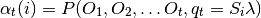

Известные проблемы¶
В данной главе приведены известные проблемы, с которыми я столкнулся за время эксплуатации Sphinx.
Кириллические символы в алфавитном указателе¶
Кириллические элементы алфавитного указателя не сортируются по алфавиту и попадают в раздел символы. Решение проблемы пока мною не найдено.
Перекрестные ссылки в LaTeX¶
Подписи к таблицам и рисункам в HTML отображаются без названия категории «Таблица» или «Рисунок», но в LaTeX-документах к подписям автоматически добавляется и категория с номером. Нумерация также осуществляется автоматически.
При создании перекрестных ссылок на иллюстрации и таблицы ссылка принимает название этих объектов, что не очень удобно если названия длинные. Обычно в документации принято делать ссылки в формате «см. Рисунок N».
В LaTeX-документах ссылки на рисунки и таблицы также преобразуются в названия, а не в категории.
Способ обхода этой проблемы описан здесь. У меня не было времени его протестировать. Буду благодарен, если кто-нибудь поделится своим опытом на этот счёт.
Масштабирование изображений в LaTeX¶
Столкнулся с проблемой масштабирования изображений в LaTeX. При использовании директивы .. image:: с параметрами :height: или :width масштабирование изображений в LaTeX не происходило. При использовании директивы .. figure:: с параметром :scale: все работает как надо, изображения масштабируются.
Ошибки при сборке PDF на Read The Docs¶
При сборке PDF используется генерация в LaTeX. Стандартные настройки шаблона LaTeX, используемого Read the Docs, не поддерживают кириллицу. Чтобы включить поддержку кириллицы, необходимо поправить преамбулу LaTeX в файле настроек Sphinx-проекта conf.py. Подробнее смотрите пример Преамбула.
Проблемы с отображением листингов и таблиц в ePub¶
Многие проблемы с отображением тех или иных фрагментов текста в ePub связаны непосредственно с просмотрщиками электронных книг. Например, плагин к браузеру Firefox для просмотра ePub отлично отображает все элементы. На Android в программе CoolReader некорректно отображаются листинги. В программе FBreader листинги отображаются хорошо, а вот таблицы сбиваются.
Некорректно отображаются формулы на Read The Docs¶
У меня возникли проблемы с отображением формул на Read The Docs при использовании расширения sphinx.ext.mathjax, пересобрав документацию с расширением sphinx.ext.pngmath все стало в порядке. Подробнее смотрите раздел Режим отображения формул.
Также проблема с отображением формул может появиться при использовании символов греческого алфавита (α, β и т.д.) внутри формулы. Так как Sphinx использует для набора синтаксис LaTeX, то набирать данные символы надо следующим образом: \alpha, \lambda и т.д. (смотрите Перечень команд LaTeX для набора греческих букв).
.. math::
\alpha_t(i) = P(O_1, O_2, … O_t, q_t = S_i \lambda)
Результат:
